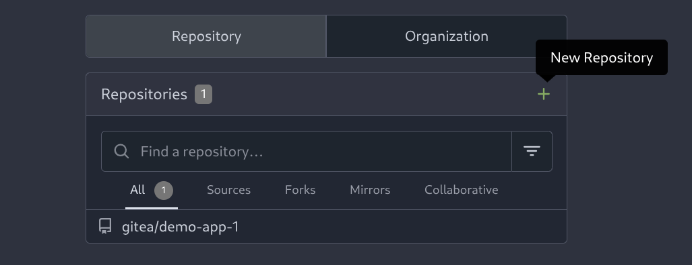

GitOps y ArgoCD - Soluciones A continuación se incluyen algunas pistas y las soluciones al reto GitOps y ArgoCD Repositorio Gitea Acceder a Gitea y crear un nuevo repositorio:  Cualquier nombre es válido, para las soluciones vamos a asumir que se llama: demo-app-argo Si no es posible clonar el repositorio, usar directamente la web de Gitea para crear y modificar los ficheros Generar CRDs demo-app en Gitea Steps Solución Ir a Gitea y en el repositorio creado añadir los siguientes ficheros: deploy.yaml svc.yaml route.yaml Obtener el yaml del deployment demo-app en el namespace user-%ID%-app, pegarlo en deploy.yaml y limipiar informacion no necesaria. Hacer commit. Obtener el yaml del servicio demo-app en el namespace user-%ID%-app, pegarlo en svc.yaml y limipiar informacion no necesaria. Hacer commit. Obtener el yaml de la ruta demo-app en el namespace user-%ID%-app, pegarlo en route.yaml y limipiar informacion no necesaria. Hacer commit. Recuerda cambiar la imagen de demo-app para que la descargue de QUAY Por ejemplo, con oc get deploy demo-app -o yaml obtenemos el yaml del deployment usado en demo-app Ir a Gitea y en el repositorio creado añadir los siguientes ficheros: deploy.yaml svc.yaml route.yaml En deploy.yaml pegar el siguiente yaml y hacer commit: apiVersion: apps/v1 kind: Deployment metadata: labels: app: demo-app app.kubernetes.io/component: demo-app app.kubernetes.io/instance: demo-app app.kubernetes.io/name: demo-app app.openshift.io/runtime: java app.openshift.io/runtime-version: openjdk-17-ubi8 name: demo-app spec: progressDeadlineSeconds: 600 replicas: 1 revisionHistoryLimit: 10 selector: matchLabels: app: demo-app strategy: rollingUpdate: maxSurge: 25% maxUnavailable: 25% type: RollingUpdate template: metadata: labels: app: demo-app deployment: demo-app spec: containers: - env: - name: DB_HOST value: postgres.user-%ID%-argo-db.svc.cluster.local - name: DB_PASSWORD value: pass - name: DB_USER value: user image: quay.io/calopezb/hack-demo-app:1.0 imagePullPolicy: Always name: demo-app ports: - containerPort: 8080 protocol: TCP resources: {} terminationMessagePath: /dev/termination-log terminationMessagePolicy: File dnsPolicy: ClusterFirst restartPolicy: Always schedulerName: default-scheduler securityContext: {} terminationGracePeriodSeconds: 30 En svc.yaml pegar el siguiente yaml y hacer commit: apiVersion: v1 kind: Service metadata: labels: app: demo-app app.kubernetes.io/component: demo-app app.kubernetes.io/instance: demo-app app.kubernetes.io/name: demo-app app.openshift.io/runtime: java app.openshift.io/runtime-version: openjdk-17-ubi8 name: demo-app spec: ports: - name: 8080-tcp port: 8080 protocol: TCP targetPort: 8080 selector: app: demo-app deployment: demo-app sessionAffinity: None type: ClusterIP En route.yaml pegar el siguiente yaml y hacer commit: apiVersion: route.openshift.io/v1 kind: Route metadata: labels: app: demo-app app.kubernetes.io/component: demo-app app.kubernetes.io/instance: demo-app app.kubernetes.io/name: demo-app app.openshift.io/runtime: java app.openshift.io/runtime-version: openjdk-17-ubi8 name: demo-app spec: port: targetPort: 8080-tcp tls: insecureEdgeTerminationPolicy: Redirect termination: edge to: kind: Service name: demo-app weight: 100 wildcardPolicy: None Crear aplicación en ArgoCD Steps Solución Acceder a ArgoCD Crear una aplicacion: Nombre que inlcuya tu usuario Proyecto el unico que aparece Sincronizacion automática Apunta al repositorio creado en los pasos anteriores Destino el cluster local y namespace user-%ID%-argo Pulsar CREATE Validar los recursos se crean correctamente Acceder a ArgoCD Crear una aplicacion Selecciona EDIT AS YAML Pega el siguiente contenido: apiVersion: argoproj.io/v1alpha1 kind: Application metadata: name: user-%ID%-app spec: destination: namespace: user-%ID%-argo server: https://kubernetes.default.svc source: path: . repoURL: http://gitea.gitea.svc.cluster.local:3000/user-%ID%/demo-app-argo targetRevision: main sources: [] project: user-%ID%-project syncPolicy: automated: prune: true selfHeal: true Pulsar SAVE y despues CREATE Validar los recursos se crean correctamente Probar despliegue Realizar pruebas para validar que ArgoCD y el modelo GitOps estan funcionando correctamente: Borrar deployment en openshift Escalar numero de replicas en ArgoCD Cambiar alguna configuracion de demo-app 7. GitOps 9. Extra